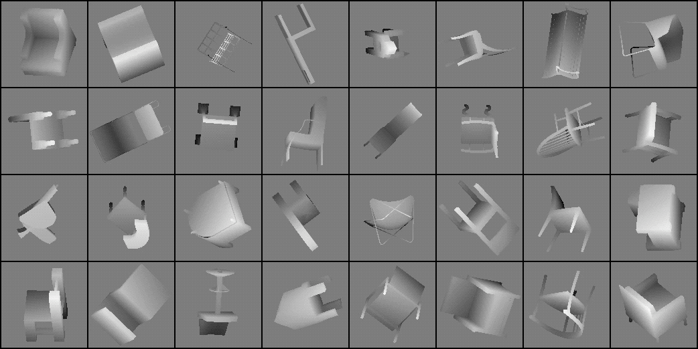

根据 2D 图片构建 3D 模型
2021-09-29
近年来，深度学习（Deep Learning，DL）在解决图像分类、目标检测、语义分割等 2D 图像任务方面表现出了卓越的能力。在 3D 图形问题方面，DL 的应用也取得了巨大的进展。在这篇文章中，我们将探讨一个最新尝试：将 DL 应用于单个图像的 3D 建模上，这是 3D 计算机图形学领域最重要和最严峻的挑战之一。
任务

一张图片，就是 3D 物体的 2D 平面投影，所以，从高维空间向低维空间转换过程中，必然会丢失一些数据。因此，从单一视图的 2D 图像中，永远不会有足够的数据来构建其 3D 模型。
所以，要实现从 2D 图像到 3D 模型的创建，必须对原来的 3D 物体本身有先验知识。
在 2D 深度学习中，卷积自动编码器是学习输入图像的压缩表”的非常有效的方法。将此架构扩展为学习紧凑的形状知识是将深度学习应用于 3D 数据的最有前途的方法。

3D数据表达

2D 图像在计算机中只有一种通用格式（像素），与之不同的是：3D 数据可以用许多不同的数字格式来表示。这些表示方法各有优缺点，因此数据呈现方式的选择直接影响到可使用的方法。
栅格化形式（体积网格，Voxel）：可以直接应用 CNN

立体像素的英文 voxel 是 volumetric pixel 的缩写，是空间网格像素到体积网格立体像素的直接扩展。每个立体像素的局部性共同定义了该体积数据的独特结构，因此卷积神经网络（CNN）的局部性假设在体积格式中仍然成立。

然而，这种表示是稀疏和浪费的。随着分辨率的增加，有用的立体像素的密度会降低。
- 优点：可以直接将 2D 表达中的 CNN 应用到 3D 表达。
- 缺点：表达方式浪费，必须要权衡计算资源。
几何形式：不能直接应用 CNN

多边形网格：是顶点、边和面的集合，可用于定义三维表面。它可以相当紧凑颗粒形式表达中细节。
点云：3D 坐标（x、y、z）中的点的集合，这些点共同形成一个类似于 3D 对象形状的云。点的集合越大，得到的细节就越多。不同顺序的相同点集仍然表示相同的 3D 对象。
优点：紧凑的表现形式，关注 3D 对象的表面细节。
缺点：无法直接应用 CNN。
1 | # point_cloud1 and point_cloud2 represent the same 3D structure |
方法
以下方法参考论文：Learning Efficient Point Cloud Generation for Dense 3D Object Reconstruction，论文网址：https://arxiv.org/abs/1706.07036
下面的方法结合了点云的优点，但使用传统的 2D 卷积神经网络来学习先验的形状知识。
2D 结构生成器

建立一个标准的 2D CNN 结构生成器，用于学习对象的先验形状知识。“立体像素方法”是不可取的，因为它效率低下，而且不可能用 CNN 直接学习点云。因此，我们将学习从单个图像到一个点云的 2D 投影的映射，并定义为： 2D projection == 3D coordinates (x,y,z) + binary mask (m)
输入：单个 RGB 图像
输出：预测视点处的 2D 投影。
1 | #--------- Pytorch pseudo-code for Structure Generator ---------# |
点云融合

将预测的 2D 投影融合到 3D 点云数据中。这是可以实现的，因为这些预测的视点是固定的，并且是事先知道的。
- 输入：预测视点处的 2D 投影
- 输出：点云
伪渲染器

可以推断，应该有必要将预测的 2D 投影融合的点云中。那么，如果我们从新视点渲染不同的 2D 投影，它也应该类似于真实 3D 模型的投影。
- 输入：点云
- 输出：在新视点处的有深度的图像
动态训练

将上述三部分结合在一起，我们获得了一个端到端的模型，此模型可以用 2D 卷积结构生成器，将单个 2D 图像生成紧凑的点云。
该模型的巧妙之处在于使 “融合+伪渲染”模块变成完全可微，其几何解释：
- 几何代数（详细参考：https://en.wikipedia.org/wiki/Geometric_algebra）意味着没有可学习的参数，使模型尺寸更小，更易于训练。
- 微分意味着可以计算反向传播的梯度，从而可以使用 2D 投影的损失来学习生成 3D 点云。
1 | # --------- Pytorch pseudo-code for training loop ----------## Create 2D Conv Structure generator |
结果
- 基于真实 3D 模型的深度图像与基于学习点云模型的渲染深度图像的比较。

- 最终结果：来自单个 RBG 图像→ 3D点云

本文的源码、论文和项目地址：
- Pytorch 源码：https://github.com/lkhphuc/pytorch-3d-point-cloud-generation
- Tensorflow 源码：https://github.com/chenhsuanlin/3D-point-cloud-generation
- 论文：https://arxiv.org/abs/1706.07036
- 项目地址：https://chenhsuanlin.bitbucket.io/3D-point-cloud-generation/
参考文献
https://medium.com/vitalify-asia/create-3d-model-from-a-single-2d-image-in-pytorch-917aca00bb07
若你觉得我的文章对你有帮助，欢迎点击上方按钮对我打赏

关注微信公众号，读文章、听课程，提升技能